Module 11 — AI-Driven identity security
Seven lessons in course order. Paraphrased study explanations expand the inspected panels and examples. Retained English illustrations show the course version; specific thresholds, refresh intervals and interface behavior are not independently verified current specifications.
11.1 Overview
Alex introduces how machine learning supports identity insights and recommendations. The module covers service categories, peer analysis, unusual access, access history, role discovery, recommendations and actual application activity. The goal is to interpret the evidence and use it in access decisions.
Missing artwork: the common photograph and Alex lesson banner were not saved.
 Lesson footer
Lesson footer11.2 SailPoint, AI, and ML
Three AI-service tabs
Access Insights makes unusual access and relevant patterns visible for investigation.
 Access Insights
Access InsightsAccess Modeling uses peer analysis to propose roles and improvements to an existing role program.
 Access Modeling
Access ModelingRecommendations uses identity attributes and peer relationships to support access requests and review decisions.
 Recommendations
RecommendationsAccess History and Activity Insights provide historical and usage data. The lesson explicitly distinguishes these visibility tools from the AI models that use identity and access data.
 Other ISC data tools
Other ISC data toolsPeer group analysis: all four process panels
 Peer group analysis
Peer group analysisThe introduction describes Sam's bank: loan officers at several branches repeatedly request tools that should be included in their access. Peer analysis helps find shared requirements.
1. Group identities. The course defaults are location, department and job title, with customization possible. The illustrated process considers identities in an active lifecycle state and creates peer groupings.
2. Find common entitlements. Shared access rights provide the evidence for the analysis.
3. Generate recommendations. Common patterns inform role discovery and access recommendations. The example proposes a role that Sam can review for loan officers across branches.
Clean data is fundamental. Several country codes meaning the same location can fragment the population and distort similarity calculations. This is the same quality issue discussed in authoritative-source onboarding, despite an older module number in the source cross-reference.
 Knowledge check
Knowledge checkAll three service tabs and the four peer-analysis panel explanations were read. No recommendation was accepted in a live tenant.
11.3 Access Insights
Three related views
The lesson brings together Identity Outliers, Access History and Access Intelligence Center. They answer different questions: what looks unusual, what changed, and what program-level patterns can be reported.
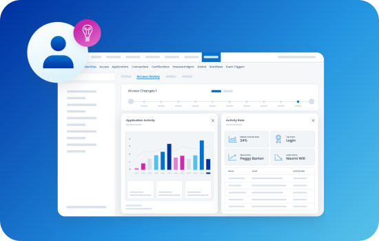
Access Insights componentsIdentity Outliers dashboard and list
The course route is Admin > Identity Management > Outliers. Administrators or Report Admin users can review the total outlier population and its thirty-day trend.
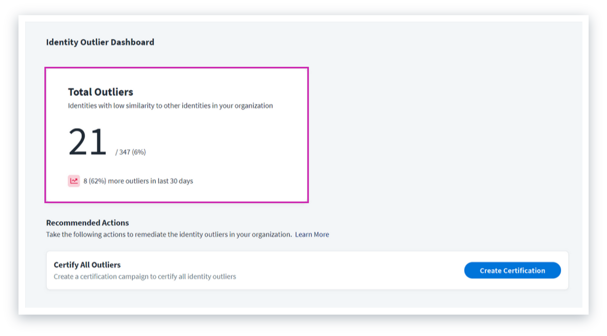
Identity Outliers dashboardThe list supplies discovery date, identity attributes and an outlier score from zero to one hundred. Higher values indicate greater potential concern in the course's scoring model. An unusual pattern requires investigation; it is not proof that access is improper.
 Identity Outliers list
Identity Outliers listFive outlier factors: accordions expanded
 Outlier score factors
Outlier score factorsRare access. The lesson examines the proportion of entitlements held by less than one percent of the organization and highlights Extremely Rare items. Validate whether the unusual access has a legitimate purpose.
 Rare access
Rare accessRoles with a single entitlement. A high count can suggest that the role structure deserves review.
 Single-entitlement roles
Single-entitlement rolesEntitlement count. Compare unusually high or low counts with the broader population and inspect rare rights.
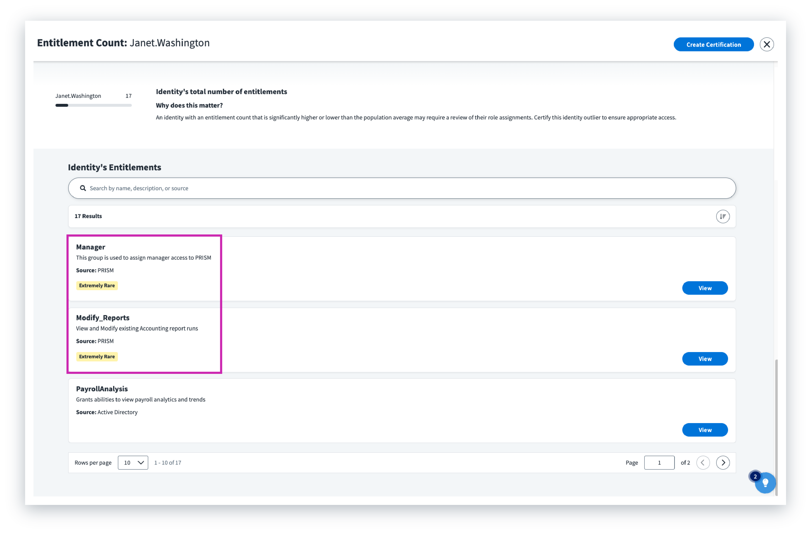
Entitlement countStandalone entitlements. Rights outside access profiles or roles may need closer governance review because they are not organized into functional groupings.
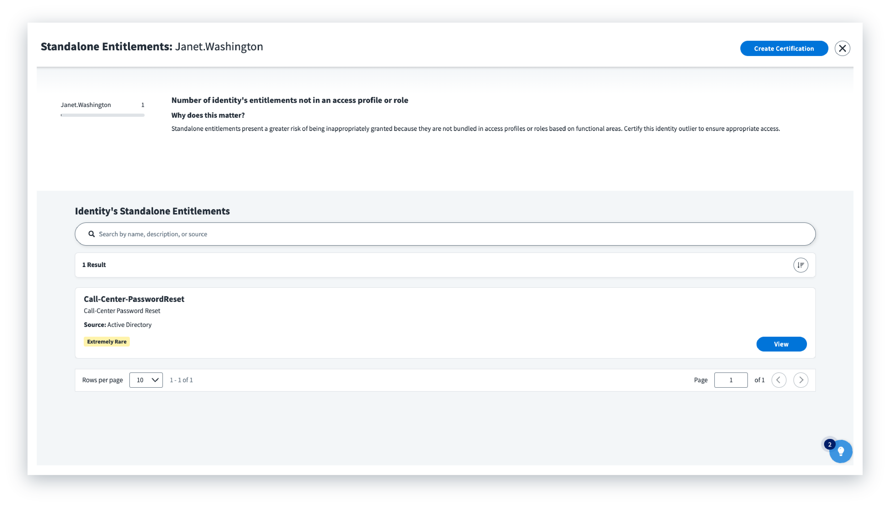
Standalone entitlementsPeer access similarity. Low similarity to the closest peer indicates uncommon access and provides another reason to inspect the identity's context.
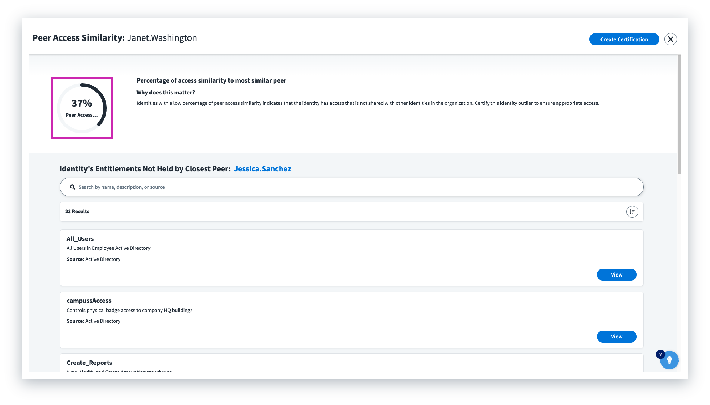
Peer similarityAfter investigation, the course illustrates Create Certification as a way to obtain an access review. A certification must still make an informed keep/revoke decision.
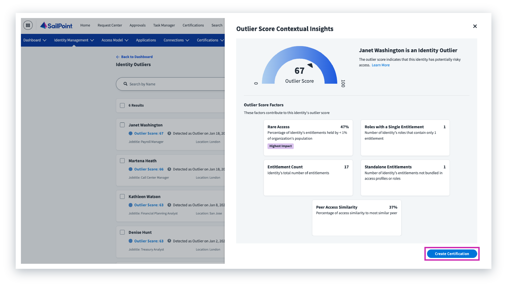
Create a certification from an outlier Narrator transition
Narrator transitionAccess History: three navigation markers
Open Admin > Identity Management > Access History and select an identity. Access History shows changes over time; Compare Access compares two dates; View Profile shows identity attributes.
Access History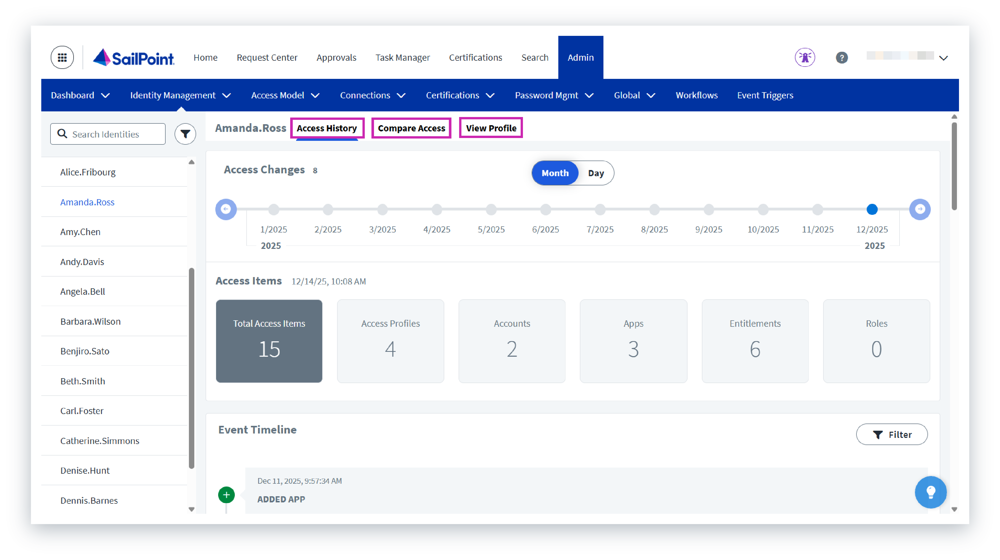
Access History navigationAuditors can verify grants and removals, managers can understand a new worker's access, and administrators can inspect access at a chosen date.
Eight history panels
1. Access Changes. Browse by month or day. Blue dots identify dates with changes; select a timestamp to inspect the corresponding state and events.
 Access Changes panel
Access Changes panel2. Access Items. Tiles show totals by type. Open Accounts, for example, to see accounts held at the selected time; select again to collapse the detail.
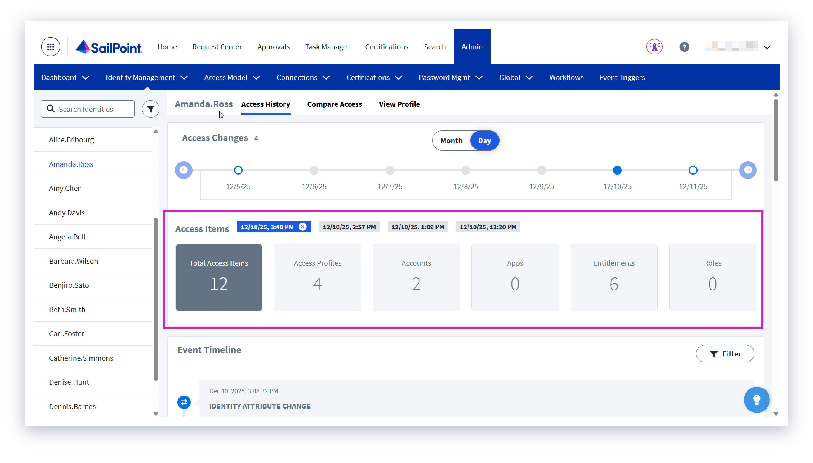
Access Items panel3. Event Timeline. The chronological history uses green plus for additions, red minus for removals and blue double arrows for governance events, including requests, certification revocations and attribute changes.
 Event Timeline
Event Timeline4. Timeline filters. Limit the view by additions/removals, requests, certifications or attribute changes. Expanded requests include information such as description, approver and decision.
 Timeline filter
Timeline filter5. Entitlement added. The example connects a directly added Active Directory right to an access request approved by Janet Washington.
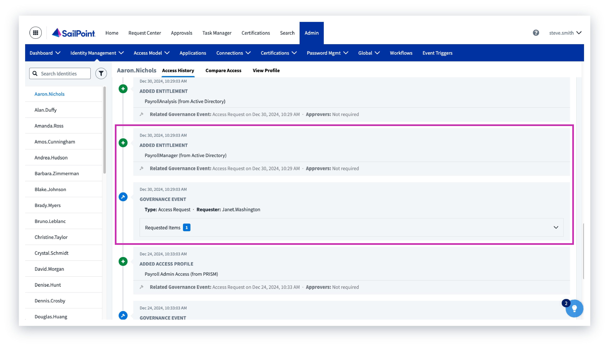
Entitlement added6. Access Request. Aaron Nichols's earlier request can be examined through Requested Items.
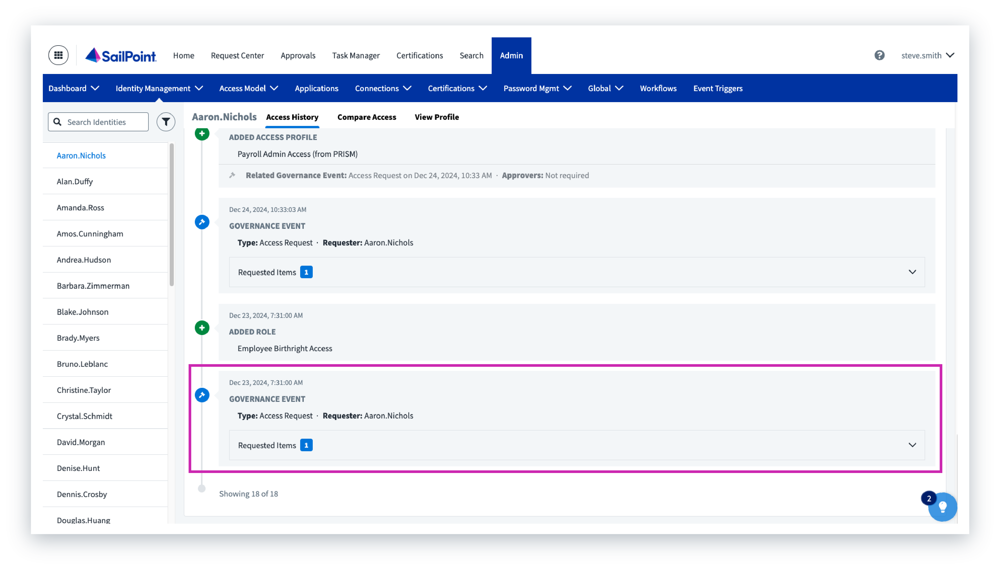
Access request7. Request details. The example identifies the SAP entitlement x_sap_intidn.user and Amanda Ross's approval details.
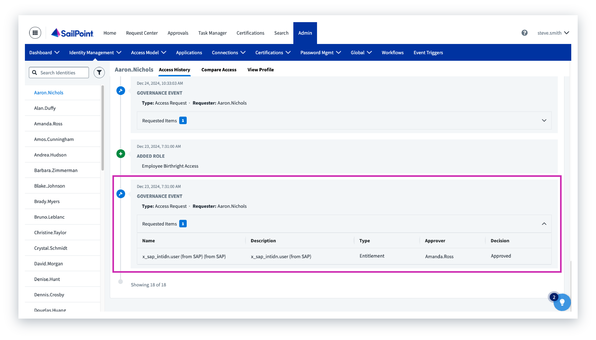
Access request details8. Certification. A later review by Janet shows the sequence ending in removal of the SAP entitlement.
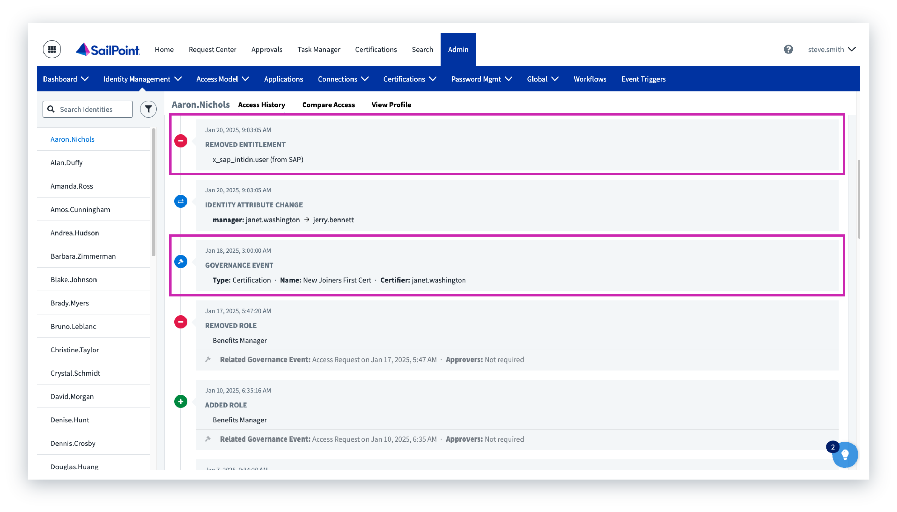
Certification eventCompare Access and View Profile
Choose two dates and review counts of accounts, entitlements and roles added or removed. When ISC is a data source, the lesson also describes access-profile and application tiles.
 Compare Access
Compare AccessExpand a tile to compare the relevant rights side by side.
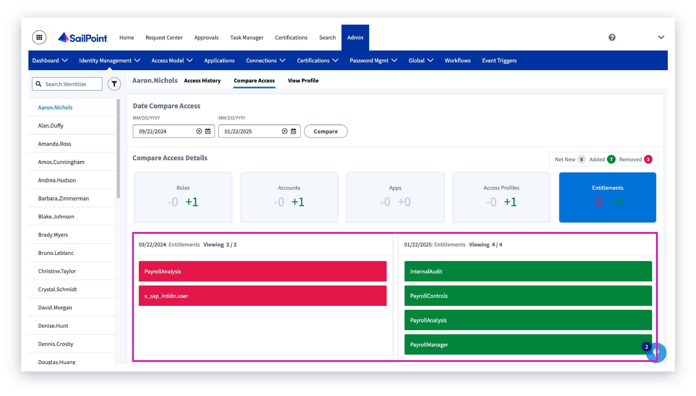
Entitlement comparisonView Profile supplies the identity's attributes in one place.
 View Profile
View ProfileAccess Intelligence Center
AIC offers predefined and customizable dashboards for identity, request and certification relationships.
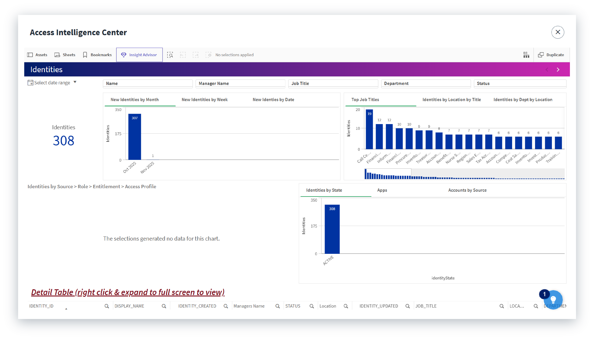
Access Intelligence CenterAIC Audit focuses on events such as requests, lifecycle changes, entitlement changes and account creation/removal.
 AIC Audit
AIC AuditReader permission allows viewing public sheets and filtering. Authoring adds creation of public/private sheets and saved filters. The lesson requires relevant administrator/report-administrator rights and describes up to twenty-four hours for changes to reach dashboards.
Open Home > Access Intelligence Center and choose an available service card, such as AIC, AIC Audit, Data Access Security, CIEM or Non Employee Risk Management. Card availability is not a claim that every service is licensed for the user.
 Access Intelligence Center entry cards
Access Intelligence Center entry cardsAll five outlier accordions, three history markers and eight timeline-panel explanations were inspected. No certification was created and no dashboard permissions were changed.
11.4 Access Modeling
Model versus modeling service
An access model is the organization's structure for grouping and assigning access. Access Modeling is the AI service that proposes new roles and entitlement updates to existing roles.
Access ModelingRole Insights: four markers
Open its dashboard tile or Admin > Access Model > Role Insights. The markers show auto-discovered potential roles, the percentage of access included in roles, the percentage of identities obtaining access from roles, and roles with suggested entitlement updates. Benchmark goals are general guidance supplied by SailPoint.
 Role Insights dashboard
Role Insights dashboardImpacted Identities counts role members who do not already have a proposed entitlement. Zero can mean everyone already holds it even though it is not yet included in the role definition. Applying an update can provision it to impacted members.
 Suggested entitlement updates
Suggested entitlement updatesLaunch Role Discovery
From Search, define the population and choose Role Discovery, then common-access or specialized roles. Alternatively use Discover Roles on Role Insights. The lesson describes newly added identity/entitlement data as available for discovery the following day.
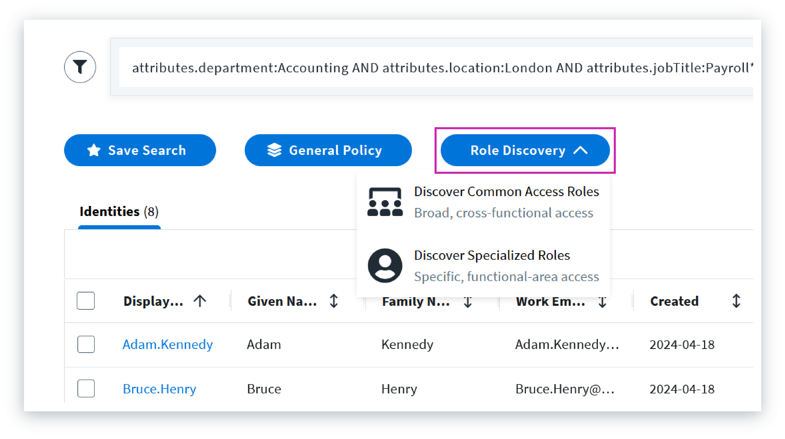
Role Discovery from Search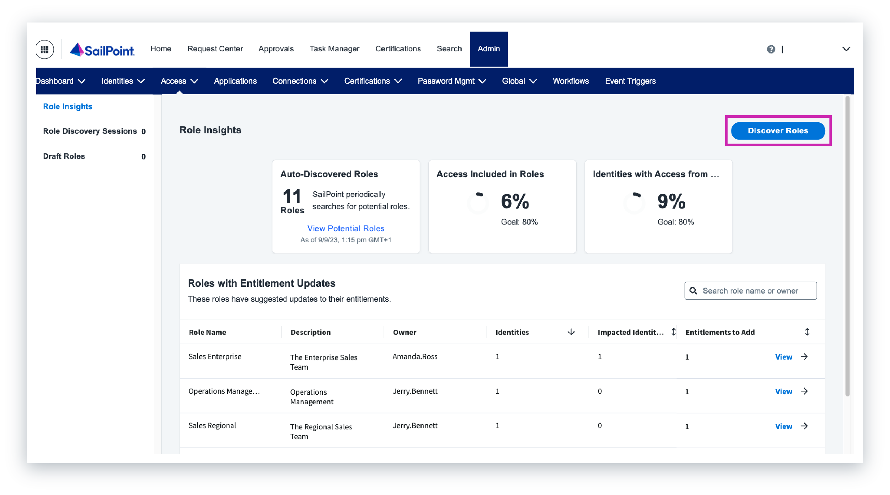
Discover Roles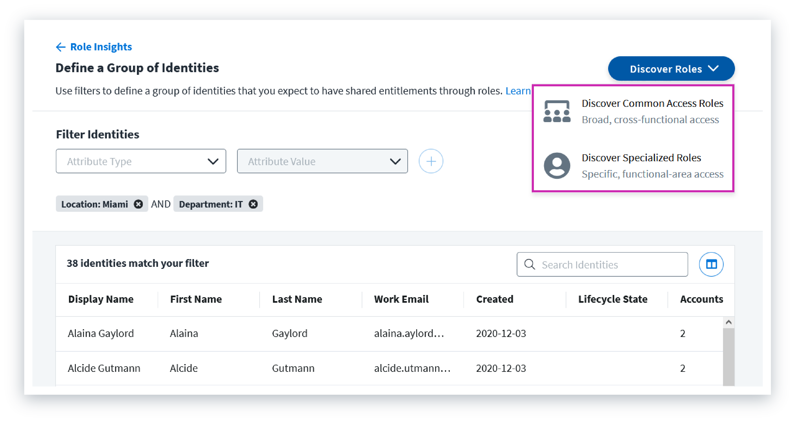
Role discovery optionsAuto-discovered roles: all nine panels
The introductory panel explains that entitlement similarities create potential roles. It shows the analysis timestamp and a count; no candidates may mean the current model already covers the most impactful common needs.
Auto-discovered roles1. High Impact. These candidates combine meaningful common access and potential improvement. Sort by impact, similarity, identity count or entitlement count.
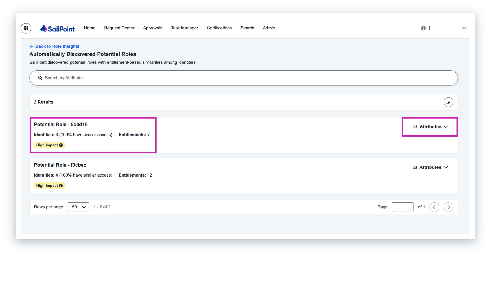
High Impact roles2. Attributes. Review the leading job titles, departments and locations and their percentages. The example associates complete attribute consistency with its high-impact classification. Work On This Role continues the review.
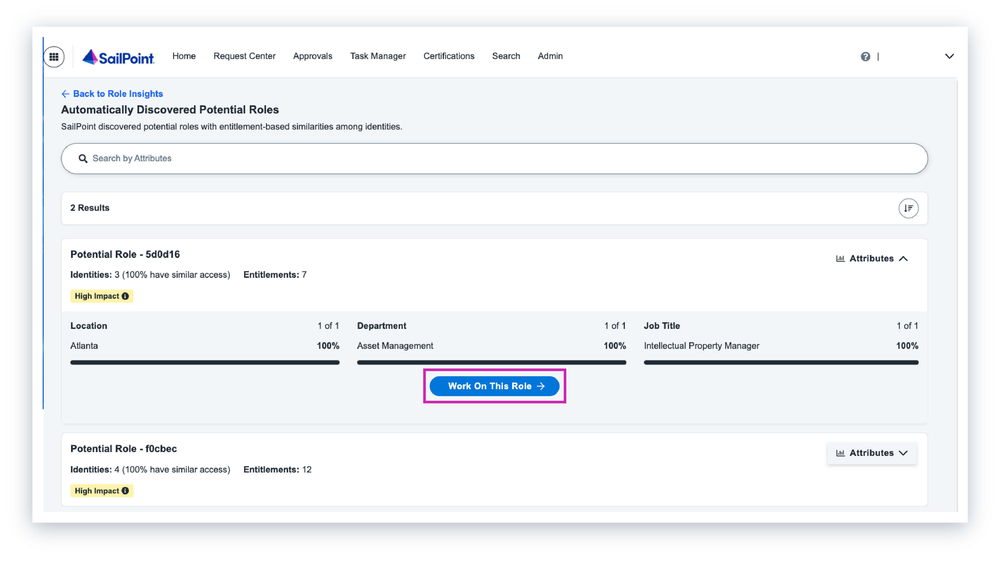
Role attributes3. Composition. Inspect Suggested Entitlements and remove unsuitable suggestions. Recommendations are editable.
 Suggested entitlements
Suggested entitlements4. Popularity. Examine how commonly each suggested entitlement appears among the relevant identities.
 Entitlement popularity
Entitlement popularity5. Identity Overview. Review the proposed population and its peer attributes; Show Chart exposes distributions.
 Identity Overview
Identity Overview6. Attribute distributions. The course warns that Identity Overview retains the originally discovered population even after Composition changes. Do not mistake it for a recalculated membership preview.
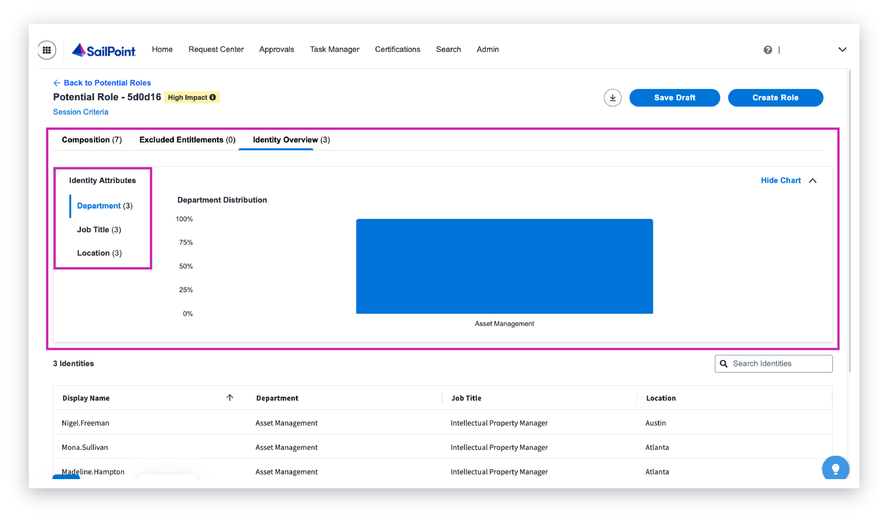
Identity attribute distributions7. Next steps. Download the composition for discussion, save the discovery draft or proceed to creation. Validate the proposal with stakeholders.
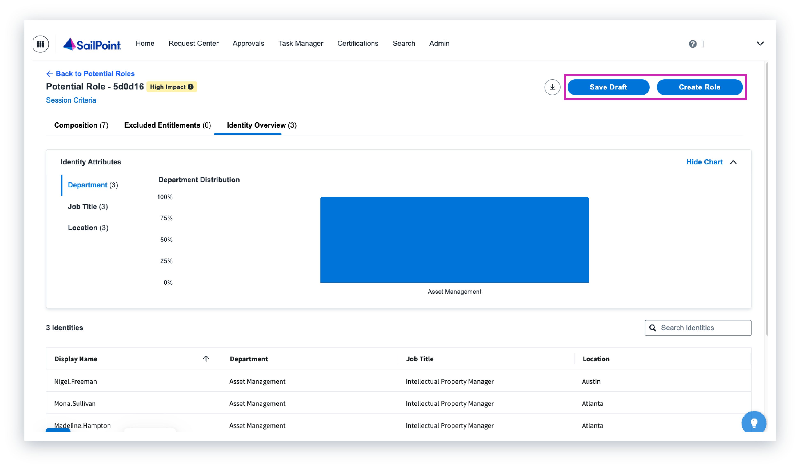
Role discovery next steps8. Creation. Supply name, description and owner. Include Identities sends requests to the role owner for the population. With Assign entitlements directly to the role unchecked, matching access profiles are created and added to the role. Checking it assigns entitlements directly instead.
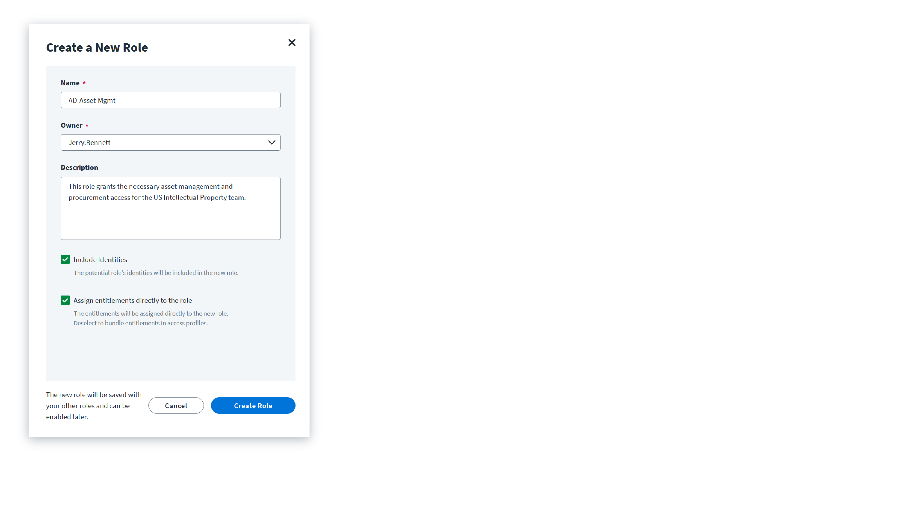
Create the proposed roleReview tenant-specific evidence and improve the role program progressively.
 Review and report
Review and reportConfirm business fit with the wider team before finalizing the role.
Stakeholder reviewAll four Role Insights markers and all nine discovery panels were read. No role was created or updated.
11.5 Recommendations
Recommendations combine active identities' attributes and peer access to support request and review decisions.
 Recommendations
RecommendationsPersonal access recommendations appear through a sign-in banner and the Request Center's Recommended tab. The lesson says that users see suggestions for themselves; no suggestions means the menu may be absent.
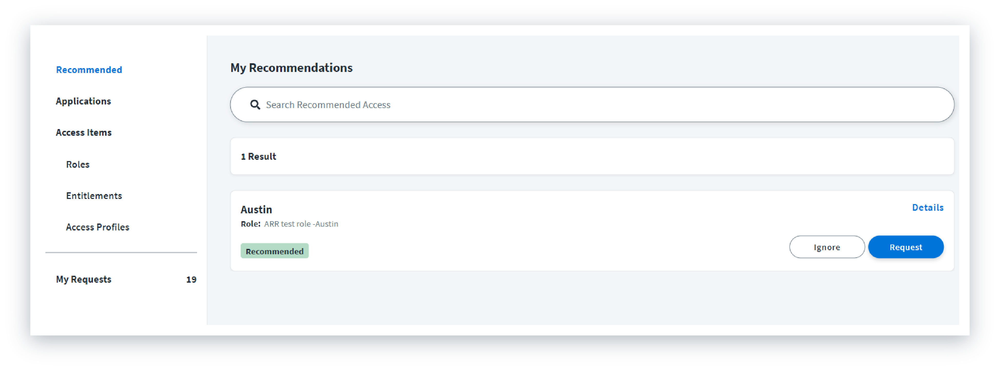
Personal access recommendationsCertification recommendations help reviewers consider which access to retain or revoke.
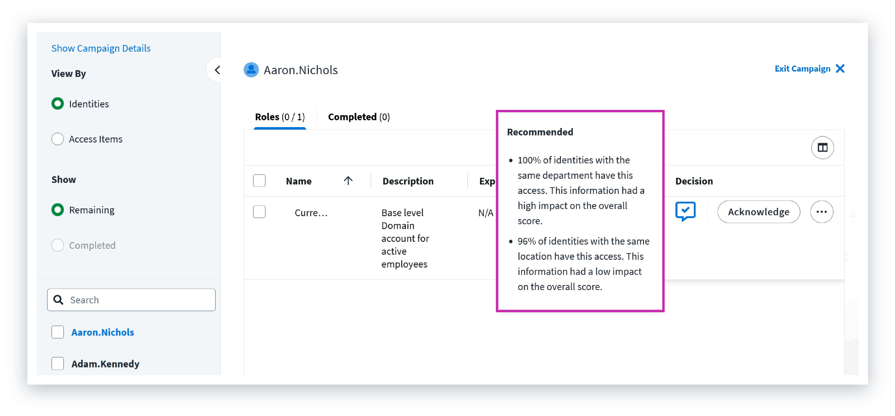
Certification recommendationsApplication onboarding recommendations support Account Correlation, Create Account and Attribute Sync configuration.
 Application onboarding recommendations
Application onboarding recommendationsAll displayed lesson text was read. These are suggestions to evaluate, not evidence that access should be granted automatically.
11.6 Activity Insights
Actual usage as decision context
Activity Insights collects supported source activity such as sign-ins and content updates. It shows whether and how often applications are used and supports requests, certifications and role discovery. Connector coverage is limited to supported configurations; the external connector documentation was not downloaded.
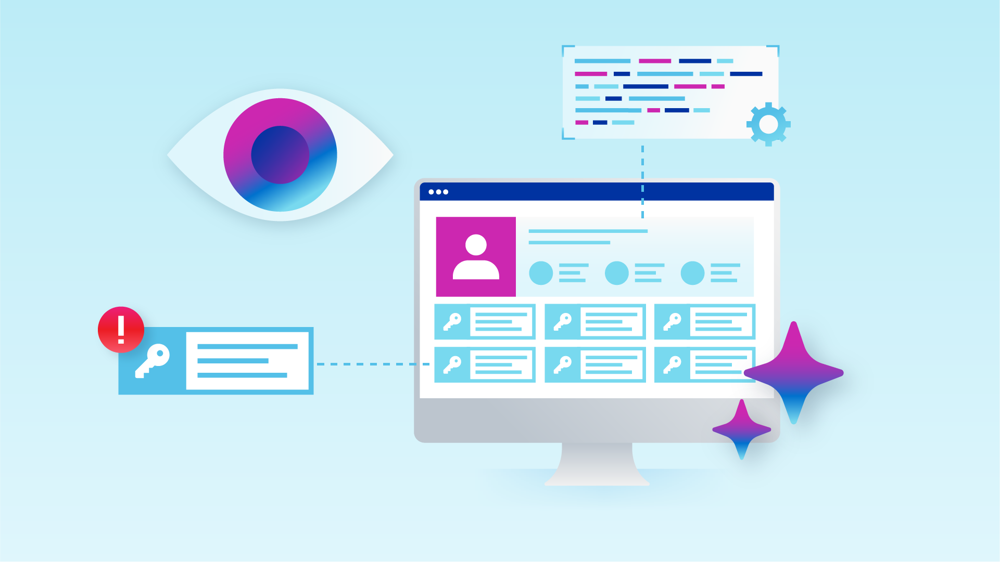
Activity InsightsFive accordions expanded
Access History. View Activity appears where the event supports it.
 View Activity in Access History
View Activity in Access HistorySource usage. Compare a person's activity with wider usage. Aaron uses Box frequently but Salesforce rarely until recently; different reviewers may interpret that recent change differently depending on his work.
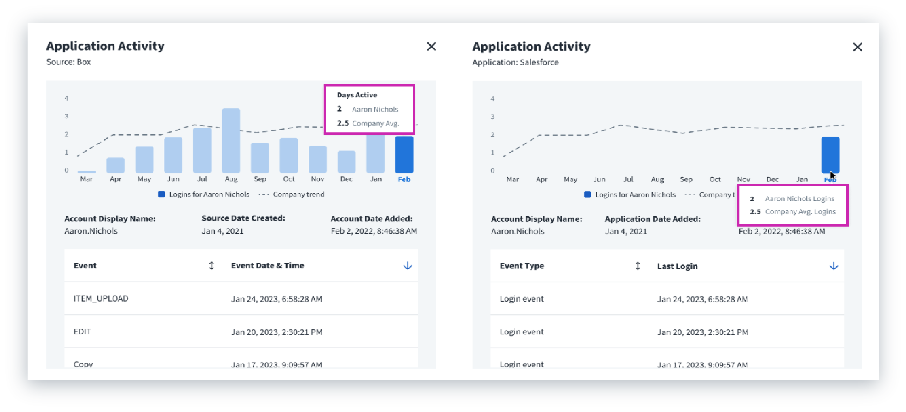
Source usage comparisonRequest approvals. Approvers can see application and entitlement usage across the relevant team.
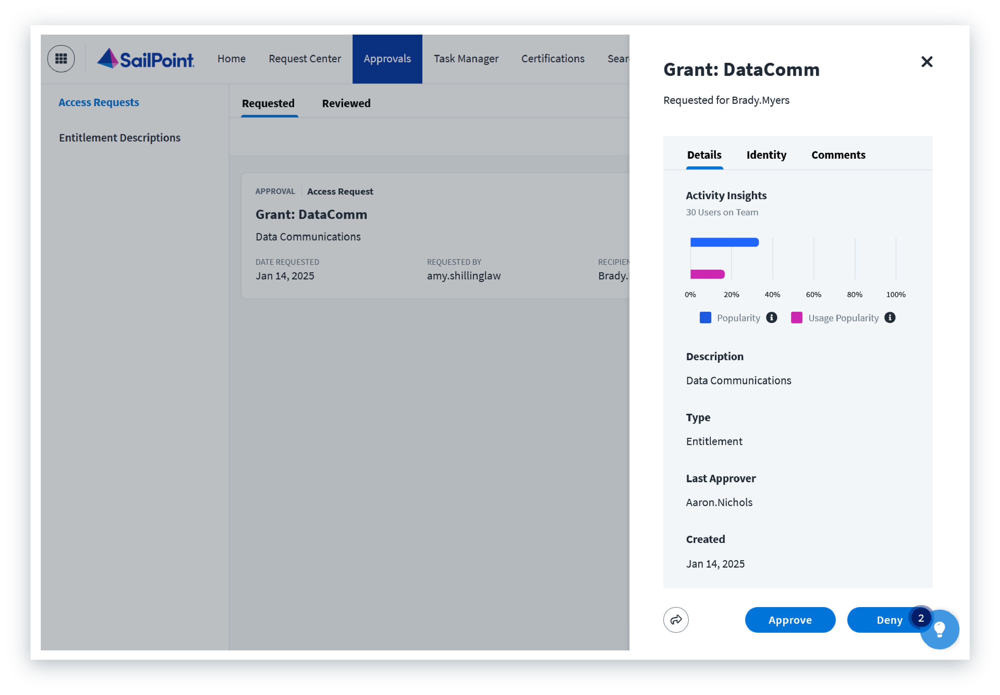
Activity in request approvalsCertifications. Days Active shows how frequently a source was used. It adds evidence to the review of a user such as Martena Heath.
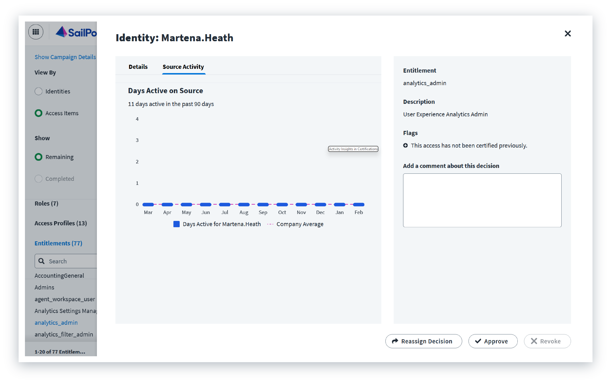
Activity in certificationsRecommendations. Combine usage with suggested decisions and knowledge of the person's role. Martena's unusual access might warrant removal, but an outlier can still have a legitimate need. A low-usage indication alone is not the final business decision.
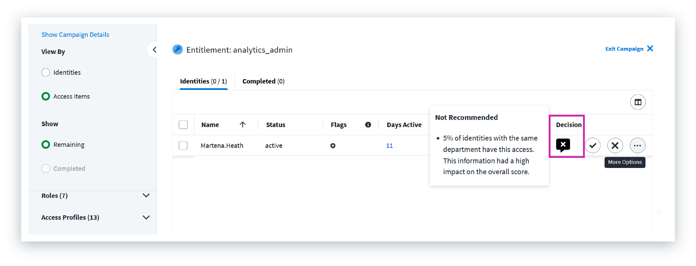
Activity and recommendationsThese views enrich historical analysis, role discovery, certification and request approval. All five accordions were read; no access decision was submitted.
11.7 Recap
The module's outcomes are to identify the AI services, explain how ML supports them and navigate their component views. Keep separate the peer-based model, the suggested action, the actual usage evidence and the human decision.
Lesson footerModule coverage and missing materials
All seven lesson bodies and continuation sections were read. Sixty-one unique inline image URLs were saved. Expanded content includes three service tabs, four peer-analysis panels, five outlier accordions, three history markers, eight history panels, four Role Insights markers, nine discovery panels and five activity accordions.
Four background-only files were not saved: the common photograph, two Alex lesson-banner variants and the recap banner. Exact paths are in coverage.json. External connector guides, full service documentation, separate audiovisual narration and executable interactions are not included. No recommendation, certification, role or access decision was applied, and no knowledge check was submitted.